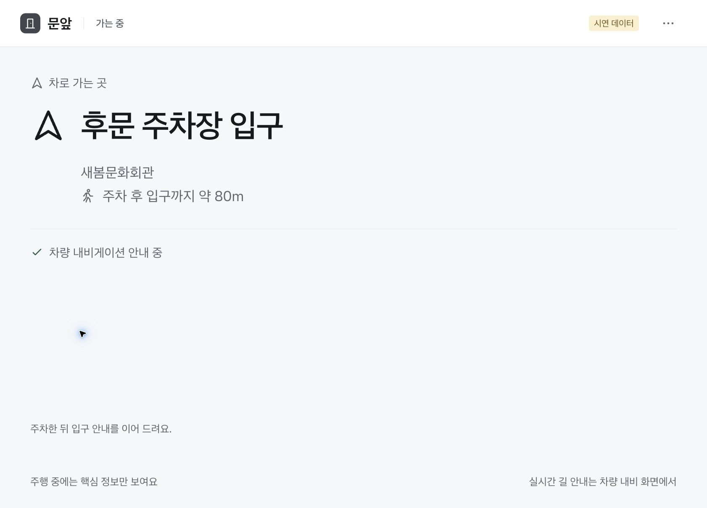
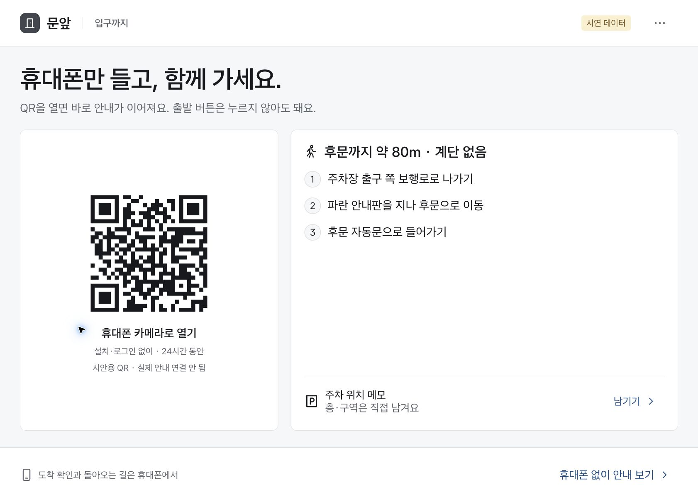
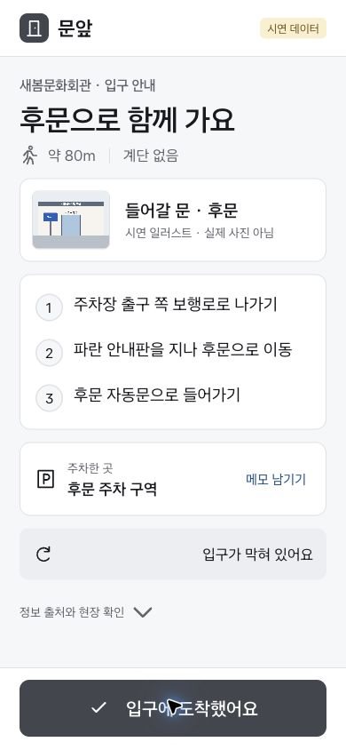
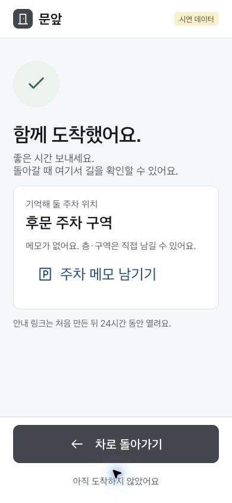
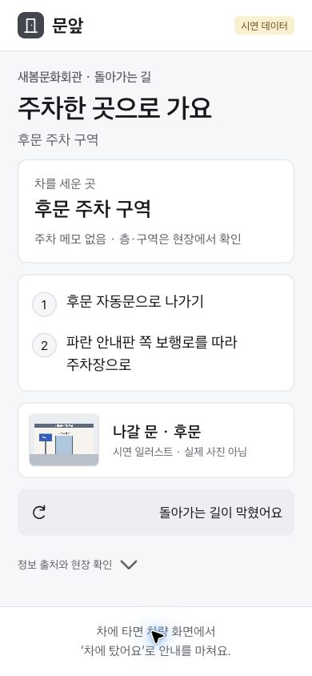

01 · 확인하고 바로 출발
목적지 + 조건 + 추천을 한 화면에
저장한 조건으로 바로 안내하고, 차 밖에서는 휴대폰으로 이어 봐요.
목적지 + 조건 + 추천을 한 화면에

다음 지점과 내비 상태만 크게

차량 신호로 사람의 도착을 추정하지 않기

‘입구로 출발’을 다시 누르지 않기

열자마자 순서와 입구 이미지

방문 중에는 추가 조작 없이

주차한 곳과 복귀 순서를 다시